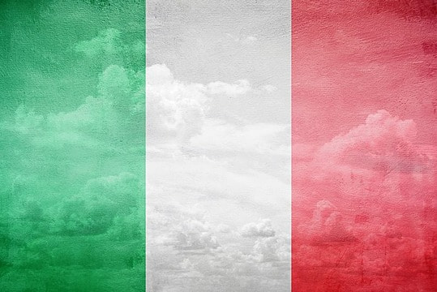

| Inicio | Tradiciones | Historia | Significado de la bandera | Comidas típicas | Lugares para visitar |
BANDERA |
|||||
|  | |||||
SIGNIFICADO DE LOS COLORES: El poeta del siglo XIX, Francesco Dall'Ongaro, expuso la simbología de los colores de la bandera empleando una descripción del territorio italiano. "Blanco como los Alpes, rojo como los volcanes y verde como las llanuras de la Lombardía".
|
HISTORIA DE LA BANDERA: La bandera de Italia se inspira en el modelo de la bandera de Francia, introducida por la revolución en los tiempos de Napoleón. Fue Napoleón quien asignó a un cuerpo de voluntarios de la Legión Lombarda, en 1796, un estandarte con los colores actuales de la bandera italiana.
|
DATOS DE LA BANDERA: Está inspirado en el modelo de la bandera francesa, la cual fue introducida durante la Revolución Francesa en la época napoleónica.
|
|||
| Todos los derechos reservados 2025 | |||||